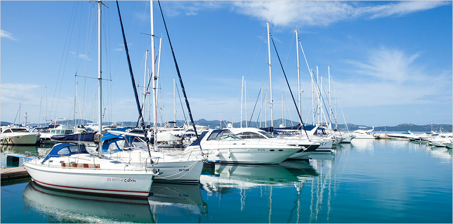

항공·항만 인프라
- Home
- 투자환경
- 인프라
- 항공·항만 인프라
Jeju International Airport (IATA: CJU, ICAO: RKPC)


14개 국가 54개 도시와 직항 노선과 연결되어 연간 약 3천만명이 이용하는 대한민국에서 인천에 이어 두번째로 많은 항공편을 운송하는 국제공항입니다.
제주시에 위치하고 있으며, 대한민국 1위 LCC 항공사인 제주항공의 거점 공항입니다. 영국 항공교통시장 컨설팅 기업인 OAG에 따르면 제주공항은 전세계에서 가장 바쁜 공항으로도 꼽히고 있습니다.
- 연간 항공 여객 수 2,945만 명 (2017년 기준)
- 연간 항공 화물량 266,370ton (2017년 기준)
- 14개 국가 54개 도시 직항 노선 (2017년 기준)

No.1 Global Busiest Domestic Route Jeju(CJU) – Seoul(GMP)
The busiest by some margin is Jeju (CJU) – Seoul (GMP) with 17 million annual seats, equivalent to around 48,000 on average each day.
Jeju is a popular holiday destination for Koreans and although the flight from Seoul is relatively short, at 243nm (451km), as an island there are fewer other transport options for reaching it.
‘Busiest Routes 2020’ OAG(UK)
항만 시설
제주에는 생산되는 농림어업 상품 등 다양한 화물의 수출과 물자 수입을 위한 화물선 접안 시설과 국내선 페리 및 국제선 크루즈의 접안 시설을 갖춘 7개의 항만과 7개의 마리나 시설이 있습니다.
제주시와 서귀포시에 총 2개의 무역항, 제주섬 전체 4개의 연안항과 제주의 부속섬인 추자도에 1개의 연안항이 운영되고 있습니다.

2개의 무역항 [제주항, 서귀포항]과 5개의 연안항[한림항, 애월항, 성산포항, 화순항, 추자항]

-
동시접안능력 64선석
1 천톤 이상 50 선석/ 100 톤 이상 14 선석 -
최대접안능력
여객 80,000 DWT / 화물 42,000 DWT -
연간 취급화물량(2019)
20,263 천톤 -
국제선 크루즈 입항 실적(2016)
507 회, 1,209,106 명

-
마리나 시설
7 개항, 94 선식